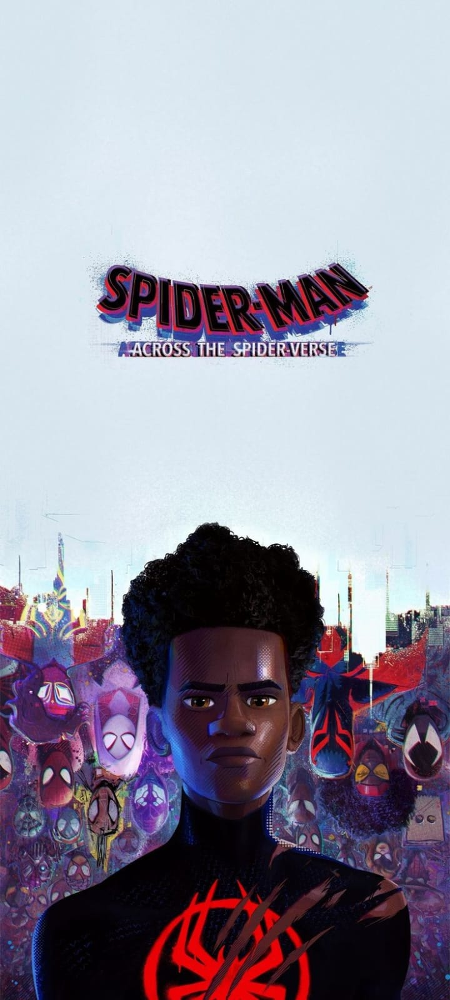
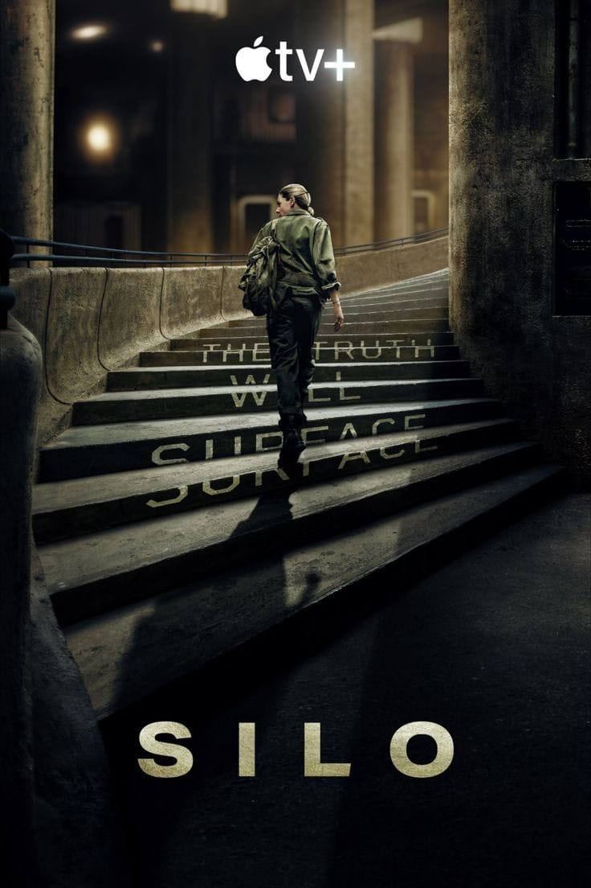

After reuniting with Gwen Stacy, Brooklyn's full-time, friendly neighborhood Spider-Man is catapulted across the Multiverse, where he encounters a team of Spider-People charged with protecting its very existence. However, when the heroes clash on how to handle a new threat, Miles finds himself pitted against the other Spiders. He must soon redefine what it means to be a hero so he can save the people he loves most.
During the last days of World War II, a solitary prospector crosses paths with Nazis on a scorched-earth retreat in northern Finland. When the soldiers decide to steal his gold, they quickly discover they just tangled with no ordinary miner.
In a bleak dystopian future, humanity clings to survival deep underground within the confines of a colossal silo. Juliette, an engineer tasked with unraveling the mystery behind the death of a colleague, uncovers startling secrets that threaten the very fabric of their enclosed world.
